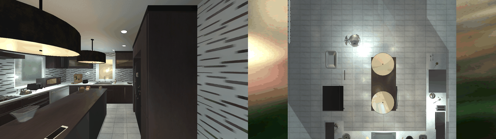

Task Input
Describe the task for the robot to perform
Scene Context (click to expand)
Results
TR-Graph | gpt-4o | 46.8s
Stage 1/4 — Parsing task structure
Safety Evaluation
Hazards detected
A. Safety Status
Safety concerns detected — repair needed
B. Analysis Summary
While placing a cellphone on top of the fridge is generally safe and permissible, the potential for the cellphone to fall and cause damage or injury makes the action unsafe due to a transferred hazard risk. Proper stabilization or an alternative placement location should be considered.
C. Hazard Classification
Type:mechanical|Defect:physical safety
D. Causal Safety Variables
location.Fridgeaction.PutObjectobject.CellPhone
E. Causal Chain
action.PutObject→hazard.fall
Potential for cellphone to fall from an unstable placement on fridge
location.Fridge→hazard.fall
High placement increases risk of falling object causing damage or injury
Task Repair
Task was modified to address safety concerns
A. Original Task Command
Place the cellphone on top of that fridge
B. Repaired Task Options
Place the cellphone on the countertop
Rationale: so it stays stable and secure
C. Repair Metrics
·
Review carefully before approving task execution. Analysis generated by a combination of symbolic systems and an LLM.
Generated Action Sequence
Executable action sequence for the repaired task
# Robot Actions
GoToObject(robot1, 'CellPhone')
PickupObject(robot1, 'CellPhone')
GoToObject(robot1, 'CounterTop')
PutObject(robot1, 'CellPhone', 'CounterTop')
Execution
Task executed in AI2-THOR simulation
Execution Recording

Agent View
Top-Down Scene View
Recording folder:
data/videos/a2478a6b
Duration: 12.0s | Frames: 12 | GIFs: 3 | Videos: 3